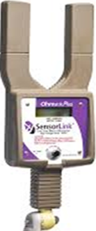

Pinza Microhmetro/amperimetrica para MT (OHMSTIK PLUS)
El microhmetro para líneas en tensión Ohmstik Plus mide la resistencia en microhmios de conductores, conectores, empalmes y dispositivos de conmutación al colocarlo directamente sobre las líneas de AT en tensión. Calcula la resistencia midiendo la intensidad (Amp.) de corriente alterna en la línea y la caída de tensión debida a la resistencia en el tramo de línea sujeto a comprobación.
La medición de este dispositivo es mucho más directa que la termografía infrarroja, y no está sujeta a factores de emisividad, meteorología, carga de corriente, radiación de fondo y otras fuentes de distorsión que provocan errores en la medición por infrarrojos. Permite almacenar hasta nueve pares de lecturas. Dicha capacidad de retener múltiples lecturas elimina la necesidad de bajar el instrumento de las líneas de AT después de cada medición.
El Ohmstik Plus puede utilizarse en la práctica totalidad de conexiones. Los empalmes de líneas pueden comprobarse tras su instalación o tras muchos años de servicio. Permite la comprobación de terminales de grapa, derivaciones, puentes y embarrados de subestaciones. Los interruptores, portafusibles y seccionadores normalmente abiertos que llevan tiempo abiertos pueden medirse justo antes de proceder a su cierre. Cada una de estas conexiones puede medirse en poco tiempo tras su instalación, o inspeccionarse tras un largo tiempo en servicio, para verificar su correcto valor de resistencia.
CARACTERÍSTICAS DESTACADAS
Mide resistencia en microhmios en conductor AT en tensión.
Mayor fiabilidad de medición frente a termografía infrarroja.
Medición de resistencia exacta o comparación con conductor próximo.
Medición de hasta 9 pares de lecturas.
Fácil de utilizar, accionamiento con un único botón.
Medición y visualización tanto de amperios como microhmios.
APLICACIONES
Medición y evaluación de empalmes en conductores de transporte y distribución.
Comprobación de resistencia de cierre en seccionadores normalmente abiertos.
Comprobación de fiabilidad de conexión en derivaciones y puentes.
Determinación del envejecimiento de las conexiones.
Medición directa de la fiabilidad de las conexiones.
Predicción de averías para evitar futuros daños.